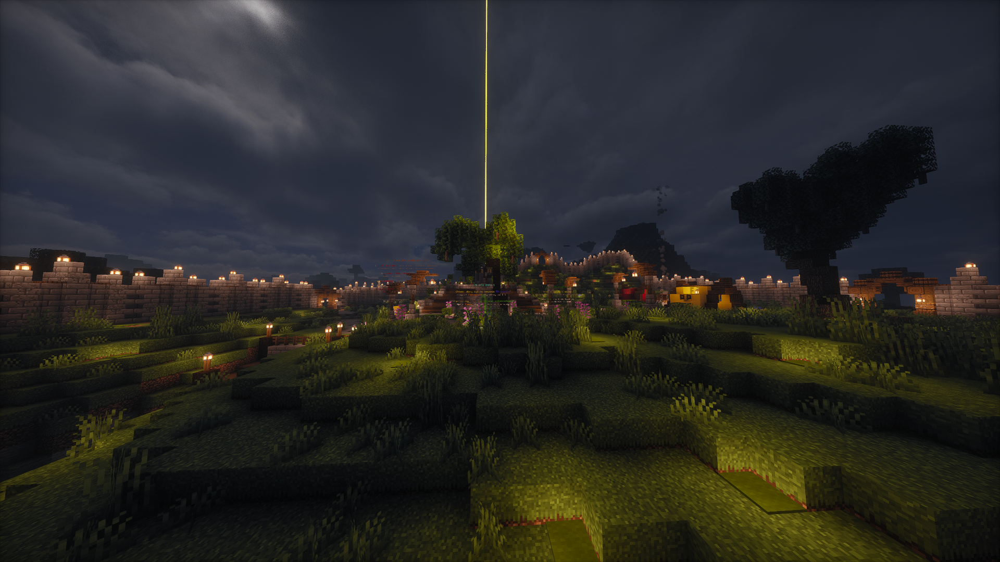
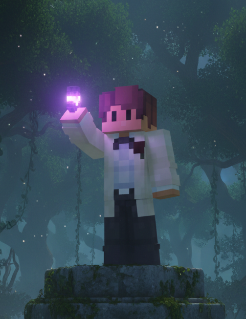
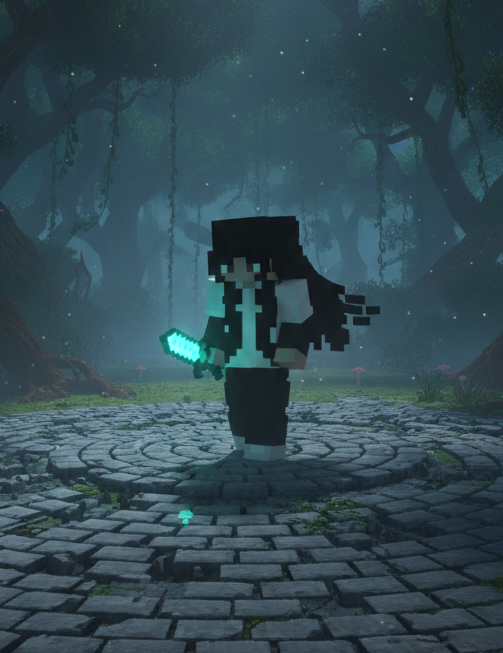

Sloth SMP: Graj we własnym tempie
Witaj w najbardziej wyluzowanym zakątku internetu!
Masz dość serwerów, gdzie administracja ma kija w tyłku, a gracze grindują 24/7 jakby od tego zależało ich życie?
SlothSMP to miejsce dla tych, którzy cenią sobie święty spokój, dobrą zabawę i społeczność, która nie dostaje szału, jeśli nie wejdziesz na serwer przez dwa dni.
U nas lenistwo to nie grzech – to filozofia.
Administracja

Lanixiak
Właściciel
Zapalony informatyk, który zamienia kawę w kod i muzykę. Fotografuję rzeczywistość, a wolnych chwilach stawiam serwery, które faktycznie działają. Jestem cholernie solidny i wytrwały, jeśli coś robię, to na 110%, dopóki nie będzie idealnie. Wyznaję zasadę: konkretnie albo wcale.

Wafel
Współwłaścicielka
Oprócz grania w Minecrafta miłośniczka piłki nożnej i profesjonalnego spania. Pomocna i ambitna, a w dyskusji? Nigdy mnie nie przegadasz. Będziesz dyskutować? Wylatujesz do Somalii.
FAQ
1. Co to za serwer i dlaczego mam tu marnować czas?
SlothSMP to klasyczny survival. Stawiamy na społeczność, brak zbędnych bajerów i święty spokój. Jak chcesz pograć w spokoju, zbudować coś fajnego i nie użerać się z bandą dzieciaków krzyczących na czacie, to dobrze trafiłeś.
2. Na jakiej wersji gramy?
Zawsze staramy się być na najnowszej stabilnej wersji Minecrafta. Jeśli wyszedł update, a my jeszcze go nie mamy, to znaczy, że czekamy, aż pluginy przestaną wywalać błędy. Cierpliwości, leniwcze.
3. Czy wolno kraść i niszczyć (Griefing/Stealing)?
Tutaj nie ma szarej strefy. System działek jest po to, żebyś czuł się bezpiecznie, ale nie zwalnia on nikogo z bycia człowiekiem.
・Na działkach: Technicznie niemożliwe. Jeśli ktoś, kogo dodałeś, okradł Cię lub zniszczył bazę – to Twój błąd. Administracja nie zwraca itemów za brak instynktu samozachowawczego.
・Poza działkami: To, że ktoś zapomniał o claimie albo dopiero zaczął budowę, nie oznacza, że masz mu zrównać chatę z ziemią i ukraść ostatni bochenek chleba.
・Mały loot? Świat się nie zawali.
・Totalna demolka? Nie bądź dzbanem. Jeśli znajdziesz niezabezpieczoną bazę, możesz tam zajrzeć, ale nie musisz od razu stawiać lava casta. To nie 2b2t.
4. Czy mogę budować farmy, które zabiją serwer?
Farmy są spoko, automatyzacja jeszcze lepsza. Ale jeśli Twoja farma trzciny ma tyle bytów, że TPS-y spadają, to Twoja farma przejdzie w tryb "uśpienia" (czyt. zostanie usunięta). Zasada: Buduj wydajnie, nie masowo.
Kontakt
Coś nie działa? Masz pomysł na ulepszenie serwera? A może po prostu chcesz zgłosić, że ktoś buduje falliczne kształty pod Twoim oknem? Wybierz najwygodniejszą dla siebie opcję:
1. Discord
To nasze główne centrum dowodzenia. Jeśli zależy Ci na czasie, uderzaj właśnie tam.
・Jak? Otwórz ticket na odpowiednim kanale.
・Zaleta: Odpowiedź dostaniesz zazwyczaj w parę chwil (no, chyba że akurat śpimy albo kodujemy). To najlepsze miejsce na szybkie pytania o działki czy błędy w grze.
2. Mail
Jeśli sprawa jest poważniejsza, dłuższa albo po prostu wolisz tradycyjną formę komunikacji, pisz na: kontakt@slothsmp.pl
・Zaleta: Dobre miejsce na zgłoszenia współpracy, odwołania od banów czy obszerne propozycje zmian na serwerze.
・Czas odpowiedzi: Zaglądamy tam raz dziennie, więc uzbrój się w odrobinę cierpliwości.